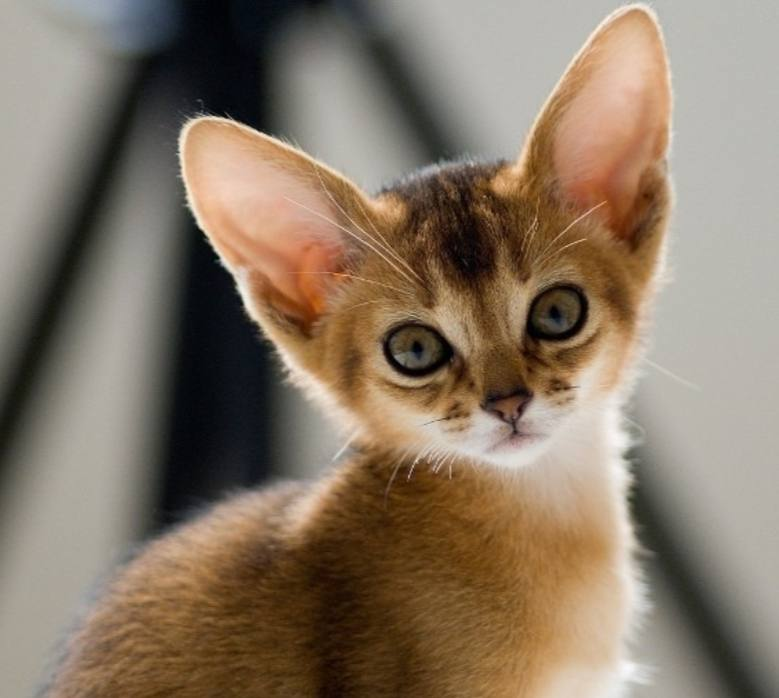
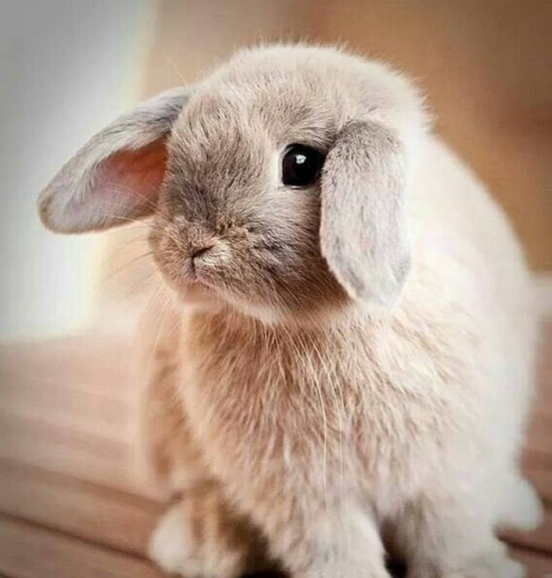

3
Hmm, I think you should see a psychologist. Such a desire is abnormal and as an intelligent kotik I advise you not to allow such behavior.

5
I don't understand how you can chase kotiki, much less drive them up a tree. Be kinder, be friends with everything. Ask for forgiveness from the kotiki that you drove up a tree.